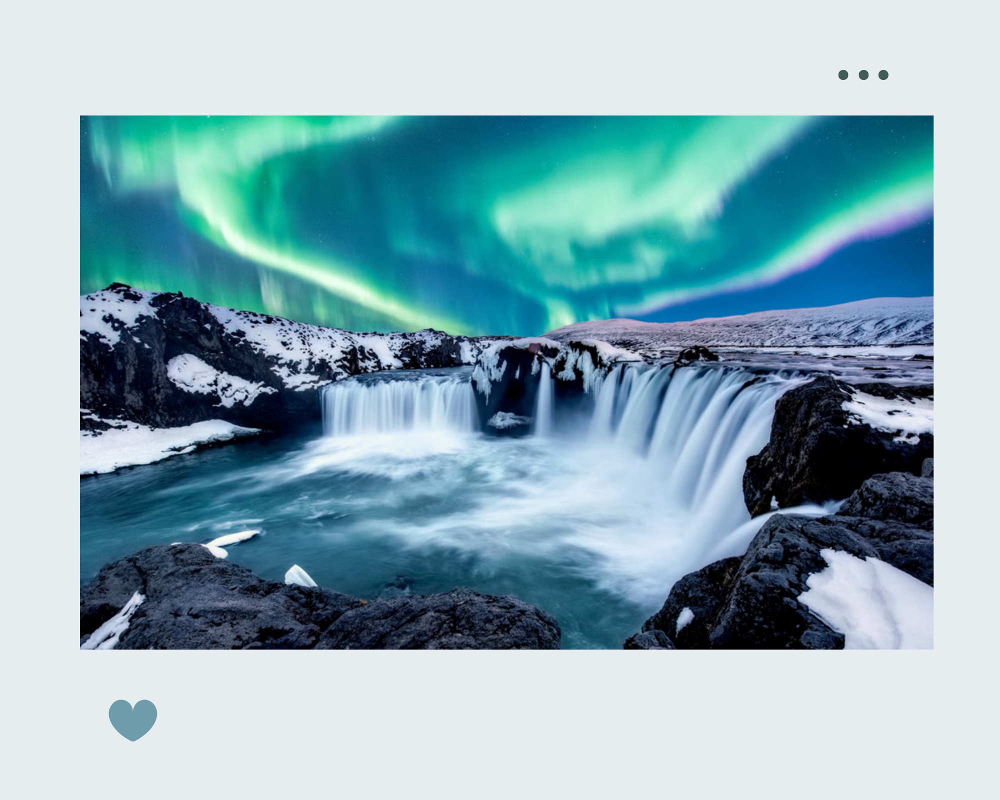
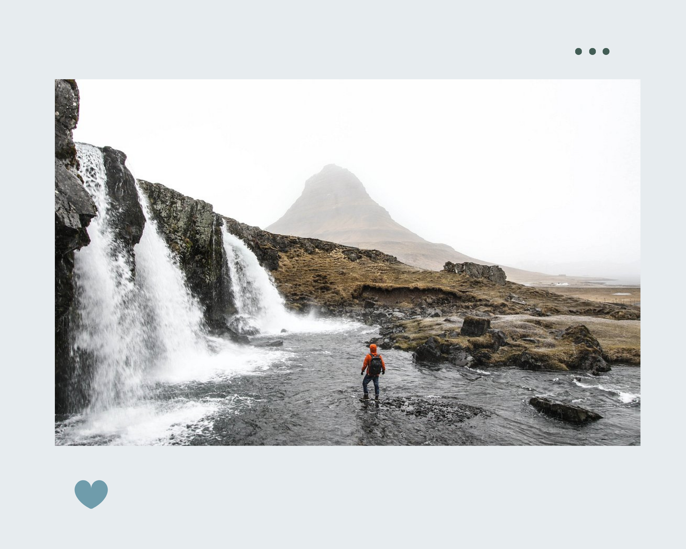
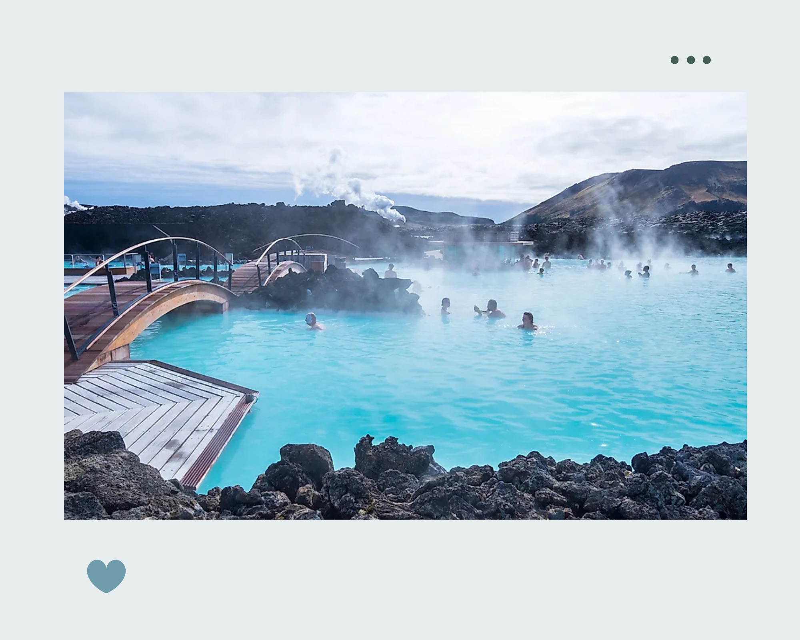

The northern lights, or Aurora Borealis, are among the most popular tourist attractions in Iceland. This is one of the best places in the world to see the northern lights. Auroras are linked to solar wind, a flow of ions radiating from the sun. These particles become ensnared in the earth's magnetic field and collide with atmospheric molecules, causing bursts of energy, which appear as large circles around the poles. This spectacular natural light show is best admired in remote places and is particularly impressive at times of increased solar activity..
Beauty of Iceland


Magnificent Gullfoss Waterfall lies around 90 minutes west of Reykjavik and is one of the best waterfalls in Iceland. The river Hvítá plummets into a canyon, which forms three-step terraces, creating a powerful torrent. Gullfoss encompasses two cascades, the upper one drops 11 meters, while the lower one cascades about 21 meters.

Dotted about the surroundings, you'll discover small streams and waterfalls. During winter, Mount Kirkjufell is a great place to watch the awe-inspiring northern lights. Eyrbyggja Heritage Centre holds exhibitions on Grundarfjördur's seafaring history and is the information center for the whole peninsula.

One of Iceland’s most famous attractions is the legendary Blue Lagoon. This geothermal spa has been popular for decades and continues to be voted as one of the top must-do things in Iceland. Today, many visitors come to enjoy the warm turquoise water and beautiful scenery, while some also believe the waters have specific healing properties to the minerals found there. While a dip in the Blue Lagoon isn’t a magical cure, it’ll certainly be a relaxing and rejuvenating part of your holiday.